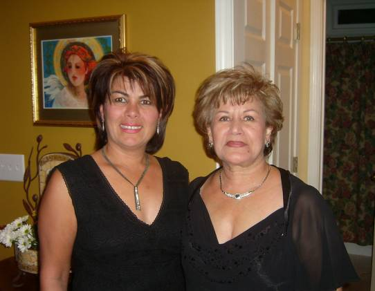

Shoreh Mahzari
19?? - ?
Shoreh Vossough was born to Hossein and Fatemah Vossough in Iran. She emigrated to the United States and married
Saeed Mahzari
. Together they had two children and make their home in Alpharetta, GA.

Shoreh and her mother Fatemah in 2005
Parents:
Hossein Vossough
???? - ?
Fatemah ???? - ?
Offspring:
Sina Mahzari 19?? - ?
Ladan Mahzari 19?? - ?
References:
1. Amir Golshani
Last modified on 18 December 2005 by
Bradley James Wogsland
.